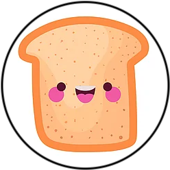
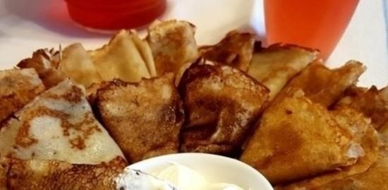
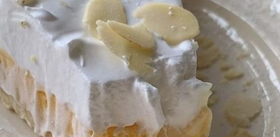
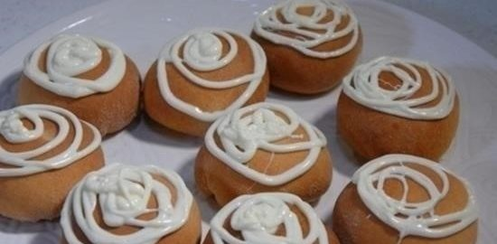
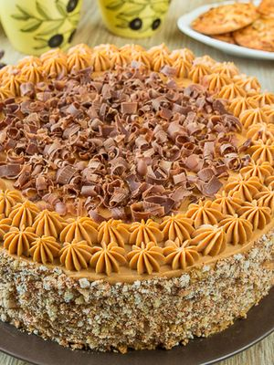

Главная
Рецепты
О сайте
Рецепты недели



Рецепт торта "Мудрый Еврей"

Рецепт всем известного легендарного торта "Мудрый еврей" - вкусного и богатого на ингредиенты. Собирается он из бисквита, орехов, мака, изюма. Сделать его не совсем просто и быстро, но и не так уж трудно, просто надо немного времени.
Читать продолжение